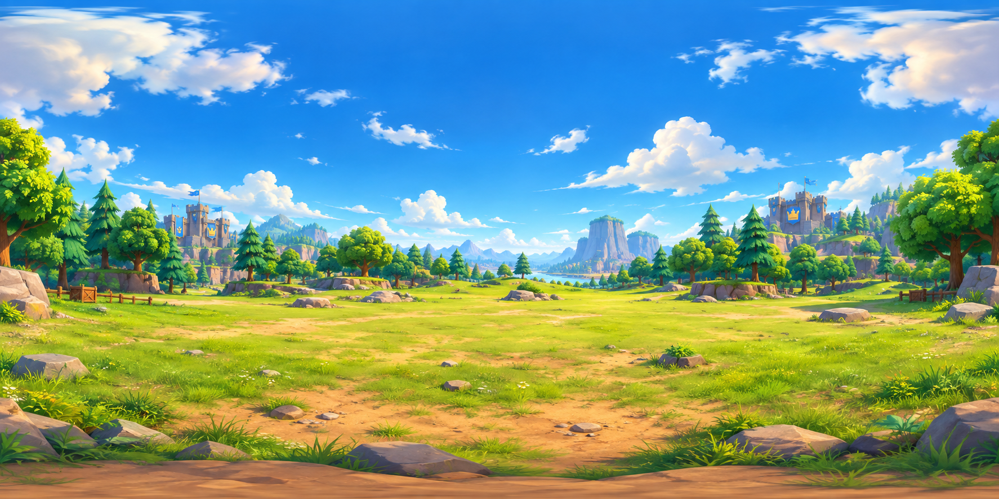

Por eso solo se ve el panel de texto y no la arena en 3D. Revisa esto:
aframe.min.js esté en la MISMA carpeta que index.html (se descargó junto con él; si solo copiaste index.html, falta).http://127.0.0.1:5500/...), no con doble clic directo sobre el archivo.1. El anuncio del duelo
Cargando...
Estilo de juego
Arrastra con el mouse (o el dedo en móvil) para mirar alrededor del escenario 360°, y usa las teclas W A S D para caminar por la arena: al acercarte a una corona numerada, la historia avanza sola. También puedes usar Siguiente / Anterior, los puntos de arriba, o hacer clic directo en una corona — te teletransportan ahí al instante. Haz clic en los círculos dorados sobre cada personaje para ver el detalle de su mazo.